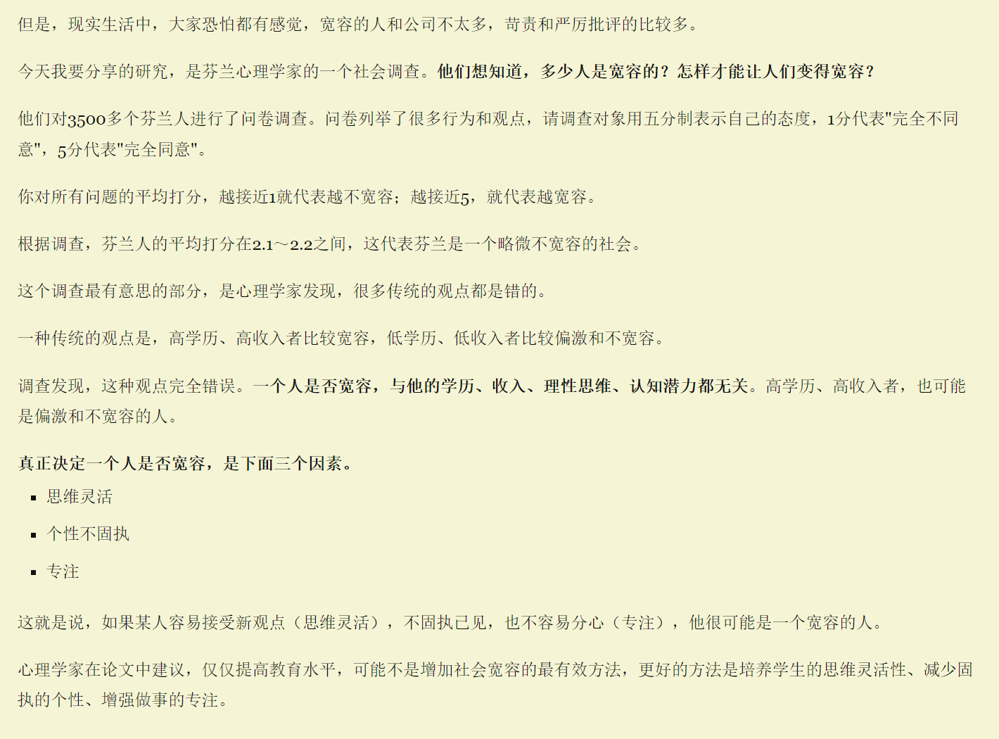

3.4 周一
今天看到一个老师的视频，他建议大家除了虚构文学作品，要多看看现实题材的书，也就是说，除了诗歌、文学、小说类书籍，要多读社会学、金融、政治等专业类的数据。我深表认同，虽说我有看不少偏研究、专业的书，但从占比和深度上是不够的，细数一下，除开计算机类的，也不过十多本, 范围太窄。
3.5 周二
“AI没有护城河”与《技术垄断》
昨天想把波兹曼的《技术垄断》买来看看，之前看完了《娱乐至死》后知道了他的三部曲。今天就恰巧看到一篇文章——AI没有护城河，中文翻译在掘金。
无意间知道了一个刚入行写作不久，作品就被改编拍成电视剧的作者，那是一部现代都市小说，我对他是如何从入门写作到被看中改编为影视作品，虽说不能光以是否影视化来评价一部作品或者说一位作家的，但某种程度上这也是一种来自于大众的认可，或许能从他身上看到一个普通人向作家身份变化的路径，或许能为我的写作带来意想不到的引导作用。这么想似乎太功利了，我看到不少作家说他们是打心底热爱写作，但我清楚地知道自己并不多热爱写作，我只是想以更优雅的方式把自己的想法和思想表达出来，记录下来，虽然我的思想似乎并没有什么特殊之处。毕竟学生时代作文总是不及格，被批为中心思想不明确的也不少。
关键是行动起来，摸着石头过河，再去思考。
3.6 周三
在v站看到一个帖子，大致内容如下：
背景：
1.去年公司找我做 ai 相关的研究，上个月上线了测试版本给内部试用。
2.去年公司业绩不行，年前就有征兆，开始搞考勤，年后回来就开始搞工时制，上个月我报的关于 ai 的工作工时都被领导给否了（还是这个领导让我做的）
现在：
由于一直做技术，也从不削向上管理，昨天工时被否，也同时发现之前合作过的开发被优化掉，开始担心自己是不是下一个，找到之前部门老领导进行沟通，帮我解决了。怎么解决的就不说了，他有他的方法。 他跟我说了两点很受用：
第一点：技术的上限很低，他第一受于整体行业环境影响，第二公司没有技术牛逼的职位，你自己可以翻公司的岗位，没有这个岗位，至少非搞研发的大厂来说都没有，你可以想象中国这么多公司有几家设置这个岗位的。
第二点：技术只是一份职位，如果你做外包，甲方一个刚毕业的实习生都能轻易的把乙方的技术给搞没，多与人对话，与机器对话太容易，能把人情世故玩明白这才是高手，你可以超脱，不拦着你。
人的修行应该基于现实。
在阮一峰的博客看到一个话题：
关于宽容，宽容是对待他人宽大有气量，不计较或追究。

3.12 周二
今天申报了退税，1150块，差不多就是我上次住院自费的金额，我想把这笔钱攒起来，以备不时之需，虽说不多，但聊胜于无吧。
我买的史铁生的2本书前天到了，本想拆封去读的。想了想，还是算了，先把手头正在看的书看完。生起看史铁生的书是在住院时，虽说我的病与他的比起来实在算不得什么。我也想像他一样写出如此有生命力的文章。
波兹曼的三本书需推迟至四月购买，因为目前我全力投入微积分的学习中。之前自认为进度尚好，直到近日一次课程大纲的复查让我意识到学习进度落后太多了，而且后面还有好几座大山等着我翻越。日常安排需得再合理些，收收心，把主要精力放在学微积分上。
3.13 周三
国民性这东西几乎无法用客观的方法进行统计或者分类，社会中的一个个体是否就真的可以代表群体中的其他个体？可以说，几乎一切关于“国民性”的书都有强烈的主观色彩，作者总是从他生活的圈子、所处的时代去选择观察对象，然后形成看法，写出来的其实全是“我觉得”，而且还是言辞激烈、观点尖锐的“我觉得”。
3.18 周四
Linux加固指南：https://pboyd.io/posts/securing-a-linux-vm/
3.19 周二
关于评判的自由，最近在用CHATGPT，发现AI可以对一个问题提供不同的视角，一些意想不到的视角。比如我先和AI讨论有关佛、阳明心学、存在主义等哲学的话题，后面问一下比较有争议性的话题，AI会给出一些我意想不到的回答。例如，我问他如何看待网上不少人评判进入婚姻生了多个小孩、在婚姻中被欺负还没有逃离的人，紧接着我问我该如何劝她不要简单粗暴的评判。以下是AI的回答：

我想我也有过在网上评判的时候，哀其不幸 怒其不争，AI说：“有时候，对他人的批判反映的是自己内心的不满和挫败感“。难怪有些批判，看起来让人觉得愤世嫉俗了，有些时候我并不是出于悲悯而说出批判，或者是不完全是。 众生之间差别很大，出生门第不同，资愚不等，有人聪明，有人笨，性格有很大的差别，男人和女人还有性别，种种之差别，都不足以让一个人可以比别人低，惠能曾说：“下下人有上上智，上上人有没意智”。
3.20 周三
https://www.1stformations.co.uk/compare-packages/ 花 £124.99 注册英国公司，然后用 Stripe 支付 或者 Paddle 都可以
3.22 周四
最近关于工作的事终于告一段落，接下来2个月可能不再去工作了。有更多的时间去学习和做自己想做的事。
3.31 周五
一周没上班了。